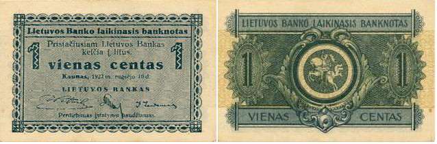
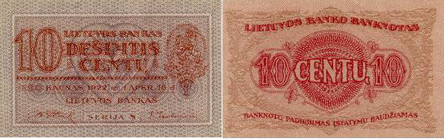
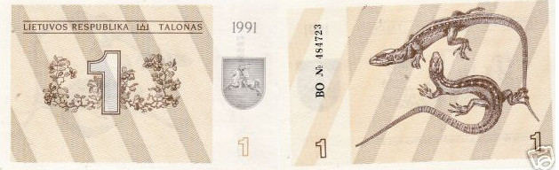

Lietuvos pinigai
LIETUVOS VALIUTA
LAIKINIEJI PINIGAI:
Nuo Lietuvos valstybes atkūrimo 1918 m. vasario 16 dienos iki pat antrosios 1922 m. puses Lietuvos teritorijoje liko cirkuliuoti dar Pirmojo pasaulinio karo metais vokiečių okupuotuose rytiniuose kraštuose įkurtos specialios kredito įstaigos - Rytų skolinamosios kasos (Darlehnskasse Ost) - išleisti popieriniai pinigai ostmarkes:

PIRMIEJI NUOLATINIAI LITAI IR CENTAI:
1922 m. lapkričio men.-1923 m. kovo mėn. apyvartoje pasirode ir nuolatiniai centų bei litų banknotai. Pirmieji litai, kaip ir dabartiniai buvo lygus šimtui centų. Gana greitai naujoji valiuta pelnė vidaus rinkos pripažinimą ir užsienio partnerių pasitikėjimą. 1938 m. vasario 16 d. laidos 10 litų banknotai su A. Smetonos portretu ir Nepriklausomybes Aktu averse bei Lietuvos Taryba reverse į apyvartą nebuvo išleisti.

TALONAI (LAIKINIEJI PINIGAI):
Bendrieji talonai (šnek. kalba - dažniausiai vagnorkės, rėtai žvėriukai) - Lietuvos laikinieji pinigai, Lietuvoje naudoti pirmais jos atgautos nepriklausomybes metais ir pakeite TSRS rublius 1991 m. (įvesti rugpjūčio 5 diena).

LITAI:
Nuo 1993 m. birželio 25 d. oficialiais Lietuvos pinigais vėl tapo litai. Įvedus litą 100 laikinųjų talonų buvo keičiami į 1 litą (1 talonas = 1 centas). Nuo 1994 m. balandžio 1 d. iki 2002 m. vasario 1 d. litas buvo susietas su JAV doleriu santykiu 4 prie 1. 2002 m. vasario 2 d. litas persietas prie euro tuo metu galiojusiu santykiu - 3,4528 lito už vieną eurą, šis susiejimas turėtų išlikti iki lito pakeitimo euru, kuris planuojamas 2011 metais.